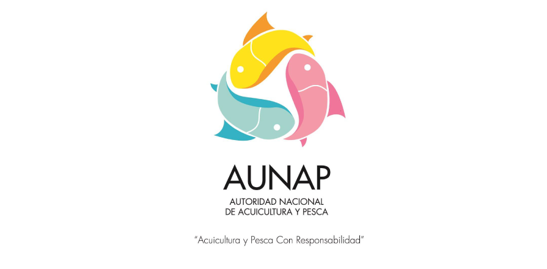

Una propuesta ejecutiva para posicionar a la AUNAP como plataforma de autoridad y a Juan Rodrigo Alvarado como marca personal con proyección nacional.

Esto no es un plan con fechas ni responsables. Es una visión estratégica. Todo se concreta tras un briefing formal.
AUNAP está adscrita al Ministerio de Agricultura. Misión: proteger, ordenar y desarrollar el sector pesquero y acuícola.
Investigación, ordenamiento, fomento, regulación e inspección.
Seguridad alimentaria, PIB y cadenas productivas.
Juan Rodrigo Alvarado Moreno asume el 1 de septiembre de 2026.
Cobertura nacional.
PrincipalDía a día visual.
Banco documental.
Desde el día uno.
Canales activos, briefing y red territorial.
Rueda de prensa nacional en enero.
Producto documental de cierre.
Documentar desde el minuto uno qué se quiere, para dónde vamos y con qué recursos.
Agendar el briefing →